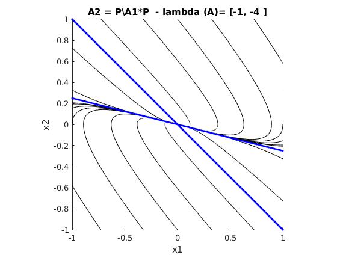

Sprawozdanie nr 1
Portrety Fazowe
piątek 11.00 26.02.16
- Marcin Kowalczyk
- Łukasz Radzio
Contents
Sformułowanie zadania
Ćwiczenie polegało na wyznaczeniu portretu fazowego dwuwymiarowego układu liniowego za pomocą matlaba. Kod z którego korzystaliśmy na zajęciach jest wzorowany na kodzie pochodzącym z książki Tearia Sterowania pod redakcją prof. W. Mitkowskiego.
Rozwiązanie zadania
close all; grid; A1=[-1 0;0 -4]; P = [1 1; 2 8]; % Macierz podobieństwa det(P); tic A2=P\A1*P; T=6; % czas symulacji a=0:(pi/10):(2*pi); X1=[cos(a); sin(a)]; % wiersze X1 stanowią punkty startowe i są rozmieszczone na okręgu. X2=X1./[max(abs(X1));max(abs(X1))]; % X2 to punkty startowe, przeskalowane w ten sposób, że okrąg jednostkowy % zamieniony został na kwadrat od -1 do 1 na obu osiach for iter=1:2 if iter == 1 A=A1; figure(1) hold on; else A=A2; figure(2) hold on; end for k=1:size(X2,2) x0=X2(:,k); sim('mojmodel',T); plot(x(:,1),x(:,2),'k'); end [w J]=eig(A); % w - kolumny tej macierzy to wektory własne, J - m. Jordana w=w./[max(abs(w));max(abs(w))]; % przeskalowanie (jak wyżej) plot(w(1,1)*[-1,1],w(2,1)*[-1,1],'b',... w(1,2)*[-1,1],w(2,2)*[-1,1],'b',... 'LineWidth',2); % wykreślenie asymptot, % tzn. lini odpowiadającym stanom początkowym % będącym wielokrotnościemi wektorów własnych string = ['lambda (A)= [',num2str(J(1,1)),... ', ',num2str(J(2,2)),' ]']; if iter == 1 title(['A1 diagonalna - ',string]); else title(['A2 = P\A1*P - ',string]); end xlabel('x1'); ylabel('x2'); axis equal; axis([-1 1 -1 1]); hold off; end toc disp('Czas wykonania dwóch wykresów fazowych przy użyciu simulinka')
Elapsed time is 3.586514 seconds. Czas wykonania dwóch wykresów fazowych przy użyciu simulinka
Dane zadania:
A1, A2, P [wP,JP] = eig(P)
A1 =
-1 0
0 -4
A2 =
-0.0000 4.0000
-1.0000 -5.0000
P =
1 1
2 8
wP =
-0.9642 -0.1362
0.2651 -0.9907
JP =
0.7251 0
0 8.2749
Analiza wyników
Macierz podobieństwa P przekształca e1 w wP(:,1), a e2 w wP(:,2), a następnie mnoży przez odpowiednią wartość własną. Kolumny macierzy wP nie są ortogonalne więc kąt między wektorami własnymi macierzy A2 nie jest róœny 90 stopni. Macierz P której użyliśmy jest podobna do macierzy dylatacji.
Drugi sposób rozwiązania zadania
Wykorzystując simulinka skrypt działał bardzo wolno. Poza tym model operował na zmiennych umieszczonych w workspacie. Gdy spróbowaliśmy przenieść kod do funkcji, to zmienne deklarowane w jej ciele były lokalne (nie zostały umieszczone w workspacie i model nie mógł z nich korzystać). Problem ten rozwiązaliśmy w ten sposób, że funkcję sim zamieniliśmy na lsim, a mojmodel.mdl na state-space model utworzony za pomocą instrukcji ss. Poniżej przedstawiamy rozwiązanie wraz z wynikiem czasowym. Okazuje się, że to rozwiązanie jest około 15 razy szybsze od poprzedniego. Przedstawiliśmy również wizualizację przekształcenia P, tzn. jak siatka kartezjańska zostaje przekształcona przez operator liniowy P.
tic draw_phase_space(A1,P) toc P_analisis(P,9,10)
Elapsed time is 0.234315 seconds.
Drugi przypadek - postać Jordana o jednym wektorze własnym
Portret fazowy w bazie uogólnionych wektorów własnych jest inny niż w przypadku postaci diagonalnej. Można zaobserwować wir, który jest spowodowany tym, że punkt początkowy mający niezerową składową wektora głównego będzie zmieniał wartość składowej wektora własnego w zależności od wektora własnego i głównego.
A1 = [-1 1; 0 -1] P A2 = P\A1*P tic draw_phase_space(A1,P,3,4) toc
A1 =
-1 1
0 -1
P =
1 1
2 8
A2 =
1.6667 10.6667
-0.6667 -3.6667
Warning: Imaginary parts of complex X and/or Y arguments ignored
Elapsed time is 0.369005 seconds.
Dodatkowe uwagi
Gdyby macierz P miała zespolone wartości własne to para ta byłaby sprzężona, dlatego istniałyby dwie klatki Jordana o rozmiarze 1x1. Wektory własne również byłyby sprzężone. Rzeczywista klatka Jordana w takim przypadku to macierz obrotu przemnożona przez moduł wartości własnej. Dlatego w ogólności podobieństwo przez P o wartościach własnych zespolonych da się utorzsamić ze zamianą bazy ortogonalnej na inną niekoniecznie ortogonalną, a następnie obrót i przeskalowanie. Dla rzeczywistych wartości własnych mamy również zamianę bazy e1,e2 na bazę w1,w2 wektorów własnych a następnie dylatację w kierunkach w1 i w2. Dla macierzy P o jednym wektorze własnym zaprezentowaliśmy przekształcenie w formie graficznej. Kierunki strzałek wynikają z znaku wartości własnej, gdy znak ujemny to strzałki powinny być skierowane do 0.
A1 = diag([-.2,-.4]) P = [1 1; -1 1]; [wP, J] = eig(P) tic draw_phase_space(A1,P,5,6) toc P_analisis(P,7,8) P1 = eye(2) + diag(1,1) draw_phase_space(A1,P1,22,23) P_analisis(P1,20,21)
A1 =
-0.2000 0
0 -0.4000
wP =
0.7071 + 0.0000i 0.7071 + 0.0000i
0.0000 + 0.7071i 0.0000 - 0.7071i
J =
1.0000 + 1.0000i 0.0000 + 0.0000i
0.0000 + 0.0000i 1.0000 - 1.0000i
Elapsed time is 0.348370 seconds.
P1 =
1 1
0 1